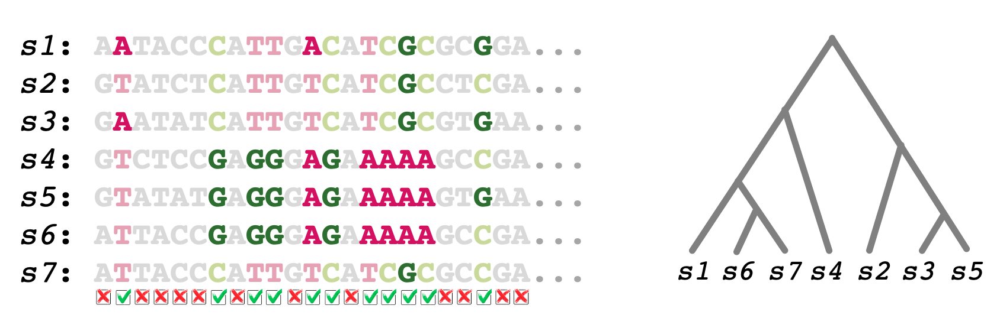

Introduction
Selective sweeps occur when a beneficial mutation spreads rapidly throughout the population
due to natural selection. Methods to identify selective sweeps were developed as a powerful
tool for uncovering the genomic basis of adaption in eukaryotes. Searching for selective sweeps
has proved to be one of the most fruitful ways to detect the footprints selection leaves on
the genome. With a plethora of detection tools, the study of selective sweeps in eukaryotic
systems is a well-established field of research. However, the search for selective sweeps in
bacteria received little to no attention so far.
What is SINCOPA?
The
SINCOPA algorithm is the first ever phylogeny-based algorithm for partial/soft selective sweeps
detection that is tailored for bacterial data.
SINCOPA is based on detecting similarity of incongruent allelic patterns in a given DNA multiple sequence
alignment (MSA).
SINCOPA is freely available to use through this web server.
Input
SINCOPA accepts as input the following data: (1) A DNA MSA; and (2) A corresponding species
phylogeny. Noteworthy, due to the
algorithm's logic,
the phylogeny has to be reconstructed based on external data,
rather than the provided MSA, solely. The MSA sequences may be either upper or lower cased,
as long as they are provided in a legal
FASTA format.
The MSA may contain ambiguous characters, such as
D (which stands for either
A,
G, or
T) and
N (any of the four nucleotides). Such characters will be replaced with the major
(non-ambiguous) nucleotide character in the corresponding column.
The tree may contain more species than the MSA, as long as all the MSA species appear in the
tree exactly in the same name (
SINCOPA will remove the unrelated species from the tree). In addition,
the tree can be provided either with/without bootstrap values (these values are automatically ignored
during the analysis).

Figure 1 - First step of SINCOPA on a toy example. Given a DNA MSA (left panel)
and a corresponding species phylogeny (right), each column is being labelled as informative
(i.e., incongruent with the species phylogeny) or not. The non-shaded columns
illustrate the incongruent columns.
Similarly, the shaded columns are congruent with the species phylogeny and thus are
labelled as non-informative for the second (sliding window) step.
Output and methodology
The
SINCOPA algorithm basically contains two main steps. In the first step,
SINCOPA detects MSA columns
that are incongruent with the provided species phylogeny (see toy example) using the classic Fitch
algorithm (
Fitch, 1971). Next, in the second
step,
SINCOPA applies a sliding window over the MSA. For each window, it computes
a similarity score, S (0<=S<=1), that (considers the amount of incongruent columns in it and) aims to capture how
conserved this window is. The output of the algorithm is a plot of the S values across the
alignment (the raw data that underlie the plot is also provided).
For further examples, please submit a running example (light blue button at the bottom of the
main page).
For further details about the algorithm, please refer to the
SINCOPA algorithm paper.